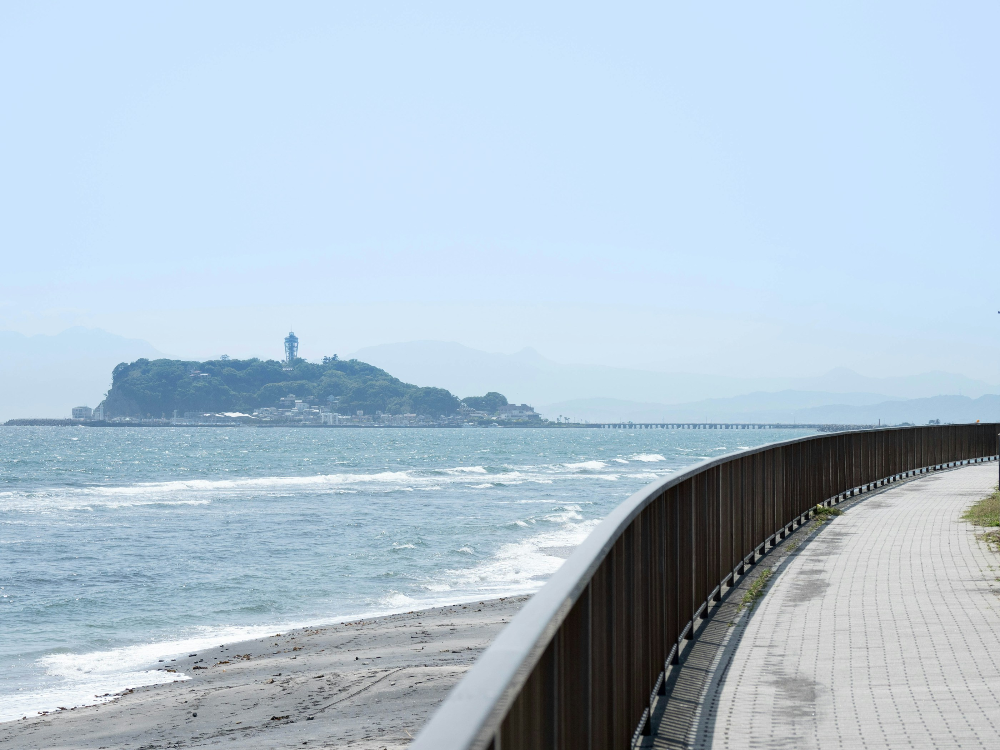
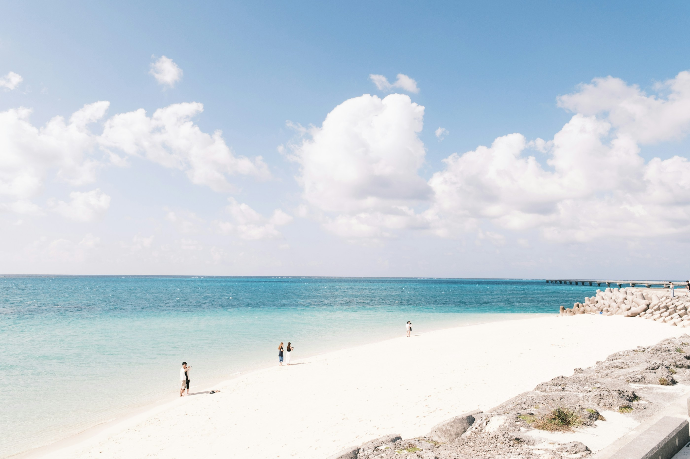

A place for every little day.
Photos, dates, and a few words. All your memories, in one calm timeline.
Explore memoriesA quiet place for your photos, your milestones,
and all the moments in between.

From the first hello to an ordinary Tuesday. Keep the little things that make a life together.

Photos, dates, and a few words. All your memories, in one calm timeline.
Explore memoriesKeep your important dates close, and see the next anniversary at a glance.
See anniversariesChoose your memories. Find a feeling. Make every page your own.
Move photos, shape the words, and pick up where you left off. Export your finished book as a PDF or high-resolution PNG pages.
Open Memory BookYour original memories always stay untouched.
A personal space for a shared life. No accounts. No cloud.
Just your story, kept on your device.
Open your book without an internet connection. Your memories travel with you.
Save a local backup of your photos, dates, and edited book. Restore it whenever you need.